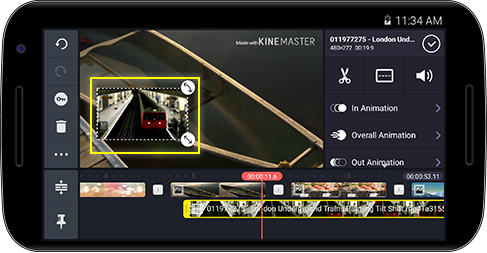
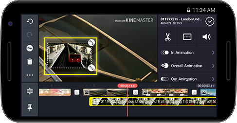

をタップし、メディアブラウザ(動画)を開きます。その後、レイヤーとして追加したい動画を選択してください。
をタップし、メディアブラウザ(動画)を開きます。その後、レイヤーとして追加したい動画を選択してください。 をタップしてからをタップし、メディアブラウザ(動画)を開きます。その後、レイヤーとして追加したい動画を選択してください。
をタップしてからをタップし、メディアブラウザ(動画)を開きます。その後、レイヤーとして追加したい動画を選択してください。
 

 をタップしてから
をタップしてから をタップし、メディアブラウザ(画像)を開きます。その後、レイヤーとして追加したい画像を選択してください。
をタップし、メディアブラウザ(画像)を開きます。その後、レイヤーとして追加したい画像を選択してください。


追加したいステッカーを選択するためには、 をタップしてから
をタップしてから をタップして下さい。
をタップして下さい。


レイヤーに任意のテキストを追加するためには、 をタップしてから
をタップしてから をタップして下さい。
をタップして下さい。


レイヤーに絵を描いたりテキストを追加するには、 をタップしてから
をタップしてから をタップして下さい。
をタップして下さい。


 を使ってレイヤーを作成した後に、
を使ってレイヤーを作成した後に、 タブをタップして任意のオプションを設定して下さい。
タブをタップして任意のオプションを設定して下さい。